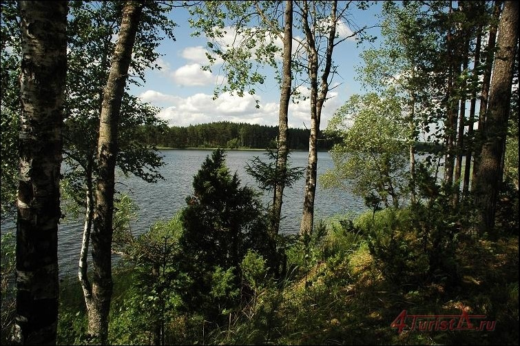
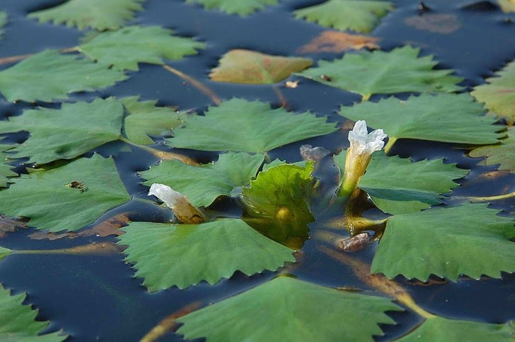
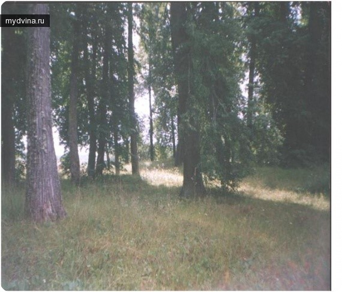

Западная Двина
Природа
Озеро Савинское
Западнодвинский район - озерный край с прекрасной природой. Здесь насчитывается около ста озер. Леса здесь называют «Берендеевым царством» за природные богатства.

Озеро Савинское — замечательное место для отдыха. Здесь очень чистый лес, богатый ягодами и грибами. В кристально чистой воде водится много рыбы. Надоедливых комаров и мух здесь почти нет. Кроме того, озеро Савинское — место произрастания реликтового водного ореха «Чилим», занесенного в Красную книгу. Примечательно, что растение водяной орех появилось приблизительно 25 млн лет назад. Плоды этого ореха были найдены палеонтологами глубоко в земле. Выяснилось, что они находились там со времен неогеновой эпохи, а первобытные люди питались ими.

Парк Никополь

Старинный парк НИКОПОЛЬ. Парк расположен на месте барской усадьбы, на берегу Никопольского озера. Возраст посадок около 100 лет. На площади 1/5 га насчитывается 80 деревьев, из них З экземпляра ели и 77 экземпляров липы мелколистной. Находится на юго-востоке от города Западная Двина. В него ведут три лесные дороги из д.Барлово, д.Баево, д.Золотухи. Большая часть деревни Никополь расположена на естественном холме (≈ 200 – 250 м от озера Никополь), и лишь несколько домов находятся у подножья холма. Земля, на которой находится парк, была подарена Екатериной II вельможе Челищеву. По началу деревни не было, был заложен парк, построена каменная церковь, и дом, где жил обслуживающий персонал. Помещик приезжал в усадьбу летом. Позднее появилось село Никополь и церковно-приходская школа. Имение Никополь представляло собой типичный образец усадебной культуры того времени. К 1774 году здесь был возведен каменный храм, утраченный в 30-е годы прошлого века. Сохранился парк, еще не утративший основные черты своей первоначальной планировки. Ступенчатые террасы, система искусственных прудов и каналов, умелая разбитая сеть тропинок, выводящих к живописному озеру – все это свидетельствует о высоком уровне мастерства создателей и планировщиков. Сегодня парк Никополь имеет статус охраняемого памятника природы ботанического профиля.